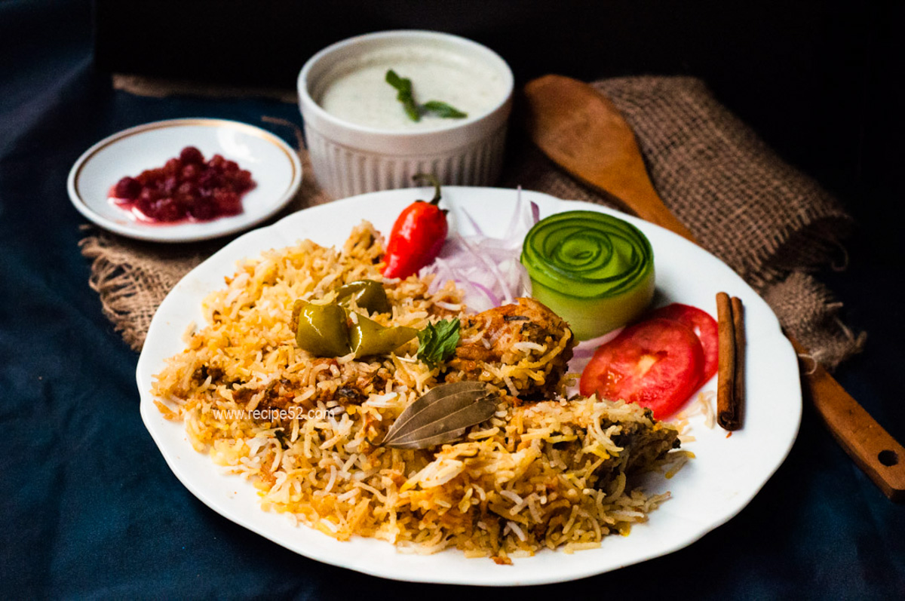
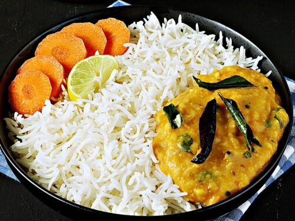

Price: Rs.149.00
Price: Rs.149.00
Biryani is a celebratory rice and meat dish cherished in the Indian sub-continent.
A traditional biryani consists of fluffy basmati rice layered over tender & succulent pieces of meat,
accompanied by the mesmerizing aromas of spices, herbs & caramelized onion.

Price: Rs.380.00
Dal rice, or dal chawal, is a classic Indian dish of lentils and rice. It's a wholesome, comforting meal often served with roti and vegetables.
 Price: Rs.179.00
Double ka meetha is an Indian bread pudding sweet made of fried bread slices soaked in hot milk with spices, including saffron and cardamom. Double ka meetha is a dessert of Hyderabad.
Contact: 8178455254 24/7 Available Address: KPHB, Hyderabad